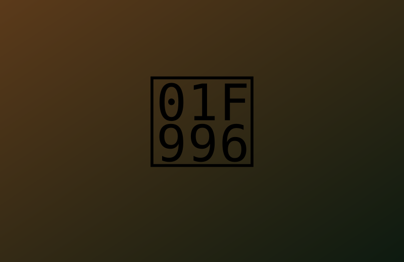
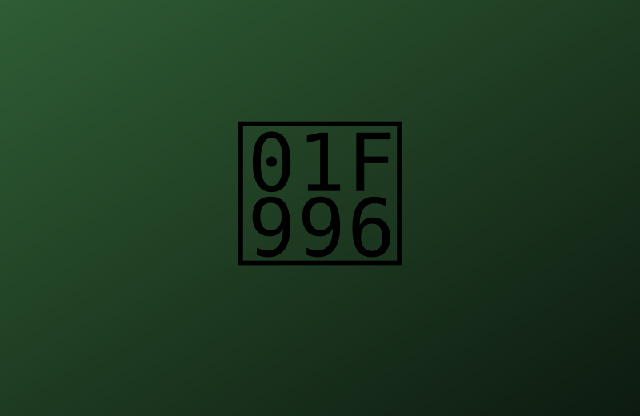
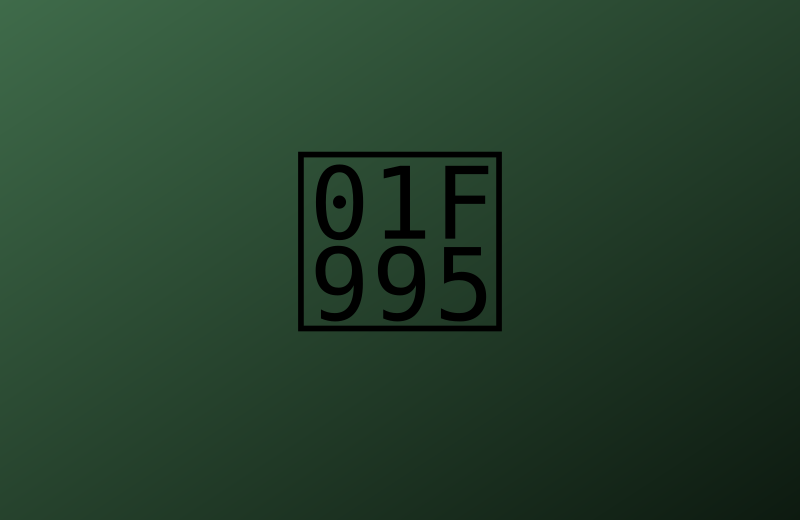
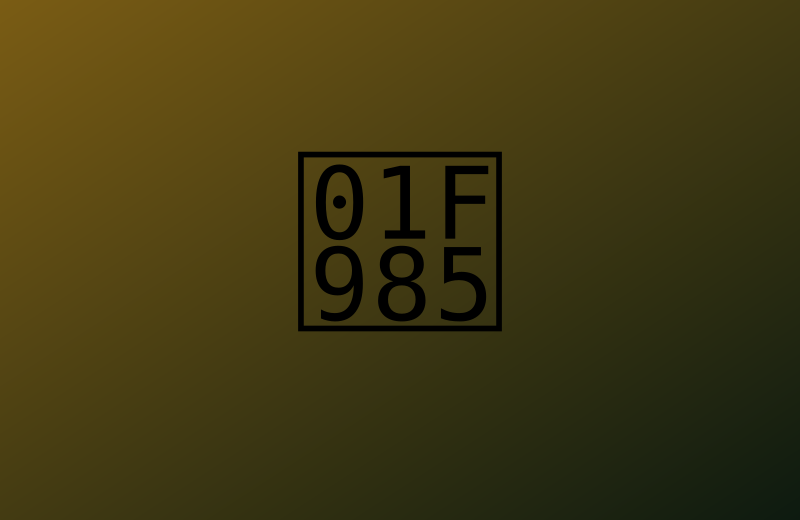
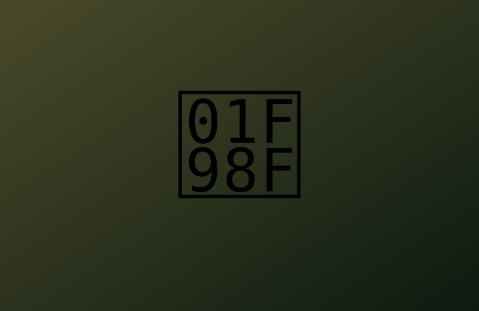
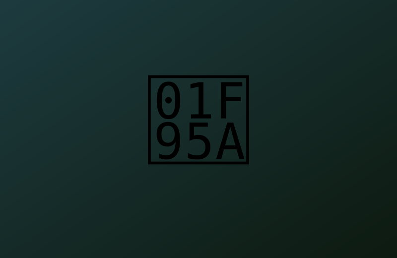

Recinto del T-Rex
Riesgo altoEl depredador más grande del parque. Mira desde la plataforma blindada a la hora de la alimentación.
- Longitud12 m
- Peso8 toneladas
- DietaCarnívoro
Cruza la puerta, sigue los senderos y conoce a las criaturas que dominaron la Tierra. Mantén las manos dentro del vehículo.
Entrar al parqueCada zona tiene su propio recinto, su propio ritmo y sus propios riesgos. Elige por dónde empezar.

El depredador más grande del parque. Mira desde la plataforma blindada a la hora de la alimentación.

Pequeños, rápidos y muy listos. Se observan solo desde la pasarela elevada.

Un paseo tranquilo entre los dinosaurios más altos, que comen de las copas de los árboles.

Una cúpula enorme donde los reptiles voladores planean sobre tu cabeza.

Safari en vehículo por la llanura donde pastan en manada. Ideal para familias.

Mira nacer a las crías detrás del cristal y conoce cómo se cuida cada huevo.
Pasa el cursor por encima de cada imagen para verla de cerca.
El cine exagera. Esto es lo que dice la paleontología.
En la película, quedarse quieto te salva.
Los estudios del cráneo indican que tenía buena visión y un olfato muy desarrollado. Quedarse quieto no lo habría salvado.
Son los cazadores que abren puertas.
El Velociraptor real era del tamaño de un pavo grande y estaba cubierto de plumas.
Así se revive a un dinosaurio.
El ADN se degrada en pocos millones de años. Los dinosaurios se extinguieron hace unos 66 millones.
El rugido es la marca del T-Rex.
Probablemente emitían sonidos graves cerrados, parecidos a los de aves como el avestruz o el cocodrilo.